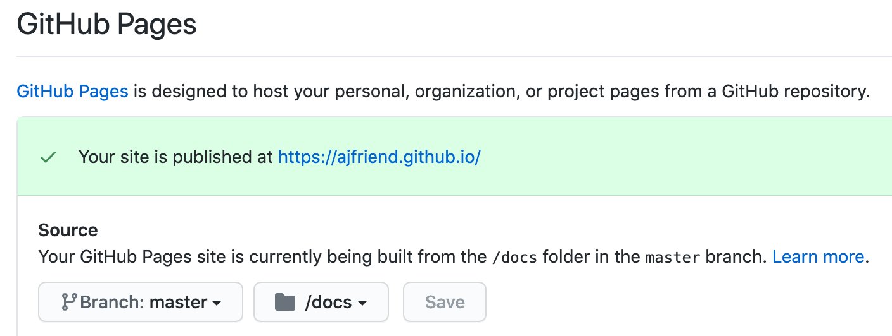

MkDocs on Github Pages
I’m serving this site via a Github Pages.
There are two ways to do this:
-
As a “user or organization site”, which means it is published from the
masterbranch (necessarily?) of of a repo named like<username>.github.io, and is published athttp://username.github.io/. -
As a “project site”, which is served from a specific branch (like
gh-pages) of an existing project’s repo, and is—published athttp://username.github.io/repository.
This site uses the first approach, to get the fancy-schmancy http://ajfriend.github.io/ URL.
Update: New flow
Forget all the stuff below. Everything is much cleaner using peaceiris/actions-gh-pages@v3.
This allows us to keep the built website files out of the repo.
This flow let’s us publish just the source files to the master branch,
at which point the action is triggered, which builds the mkdocs site
and pushes the result to the root directory of the gh-pages branch (or whatever other name we’d like).
We use the GitHub UI to select that we’d like to serve our site from the root
of the gh-pages branch, and everything works great!
Workflow
- Make changes and merge to
master. - Push
masterto GitHub. - Site gets build by the GH Action, and pushed/published from the
gh-pagesbranch.
Also, you should probably delete the gh-pages branch locally, since you’ll
never write to it directly.
Old flow
Publishing from master
We configure the repo
to serve the website from the docs folder on the
master branch. This means we need to commit all the built website files to
git, which is not ideal because:
- the process is a manual, and
- we’re adding output files to version control.

We also need to configure the mkdocs.yml file with
docs_dir: src
site_dir: docs
src, and that it should build
the output website to docs.
Workflow
- Make changes to the markdown files.
- View changes locally with
mkdocs serve. - Build the website to
docswithmkdocs build. - Commit the changes, especially the entire output folder
docs, and push to the upstreamoriginremote on Github.
Github will serve whatever website files are in the docs folder after uploading
to Github.
Publishing from gh-pages
TODO
Is there an alternative approach that avoid having to build manually and commit the website files to git?
For example, could I keep only the src files on the master branch of the
repo, and build the website docs to the gh-pages branch? I might be able to
setup a hook or GithubAction to do that when I push to the master branch.
That might be what the links below are trying to suggest..
A few different ways using the gh-pages approach:
- https://squidfunk.github.io/mkdocs-material/publishing-your-site/
- https://github.com/marketplace/actions/github-pages-action
- https://github.com/peaceiris/actions-gh-pages
- https://bluegenes.github.io/mkdocs-github-actions/